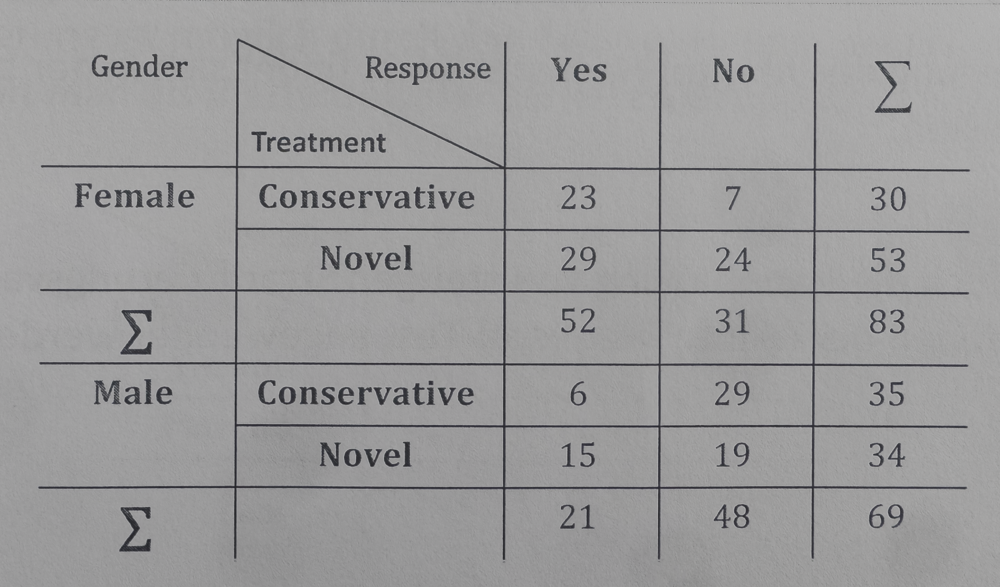
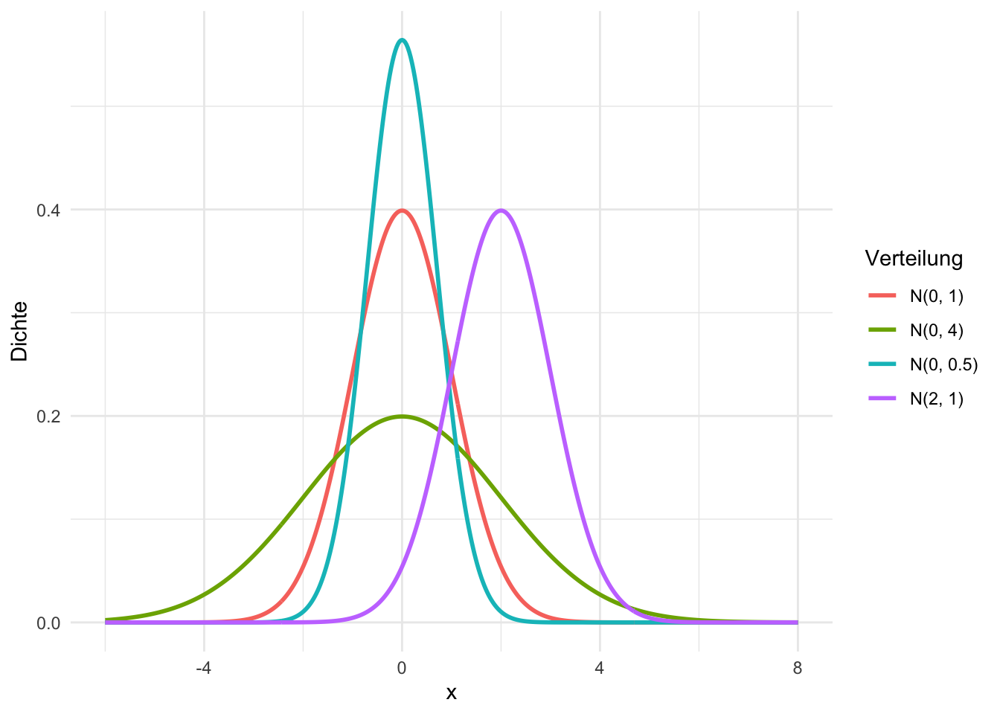
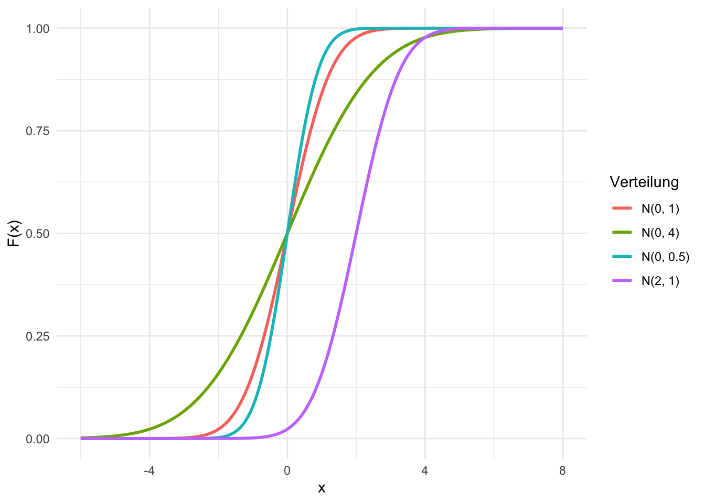
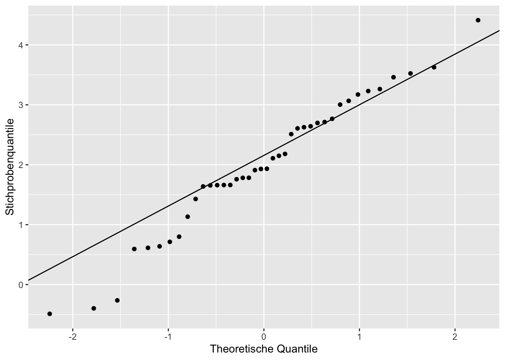
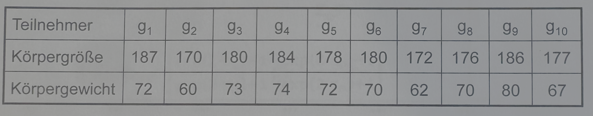
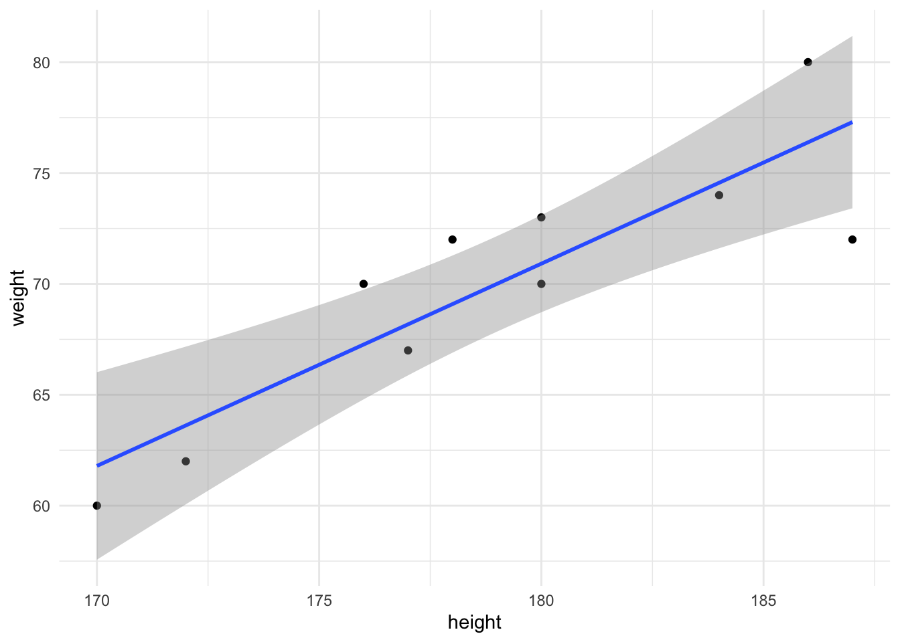
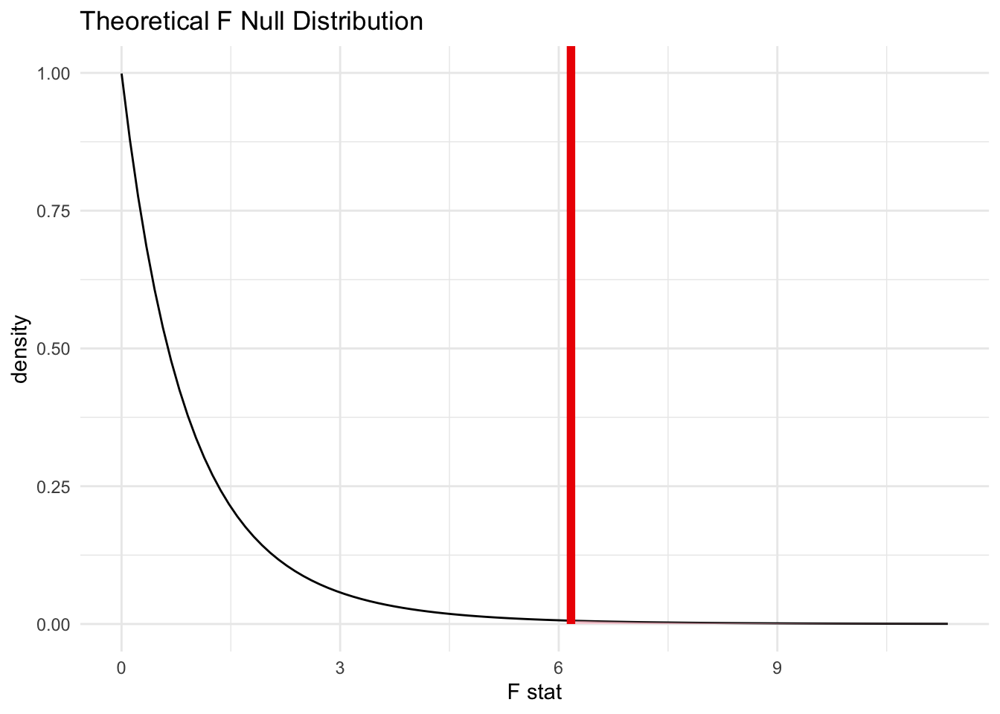

res <- binom.test(9, 16, p = 0.5)
res$p.value[1] 0.8036194Journal of Statistical Software hier auch oft Publikation von R packages, z.B. BayesMultiMode: Bayesian Inference in R
Modelle sind stets Vereinfachung der Realität
Modelle haben Voraussetzungen; meist sind diese nicht empirisch zu überprüfen.
Bei einem binären Experiment ist die Wahrscheinlichkeit der korrekten Zuordnung durch Zufall gleich 50%. Beispiel: Entscheidung ob zwei abgebildete Menschen jeweils Geschwister oder Doppelgänger sind. Ab wann wäre man überzeugt, dass eine Methode die Zuordnung sicherer trifft als der Zufall? 9/16? 10/16? 11/16?
P: Grundgesamtheit
\(\hat{p}\): Stichprobe
Statistische Tests versuchen, aus \(\hat{p}\) Aussagen über P zu tätigen
\(H_0\): Nullhypothese. Die Wahrscheinlichkeit, dass man die Zuordnung richtig trifft, ist ≤0.5 \(H_1\): Wahrscheinlichkeit, dass die Zuordnung richtig ist, ist >0.5
Jeder statistische Test fragt letztendlich “Wie wahrscheinlich ist mein beobachtetes Ergebnis unter der Annahme der Nullhypothese?”.
B(x|n,p) = \(\binom{n}{x} p^x (1-p)^{n-x}\); n: Anzahl der unabhängigen Versuche p: Erfolgschance bei einem Versuch x: Anzahl der Erfolge
Binomialkoeffizient \(\binom{n}{k}\) = \(\frac{n!}{k!(n-k)!}\)
Die Wahrscheinlichkeit, den in der Stichprobe beobachteten Wert (oder einen noch extremeren in Richtung Alternativhypothese) zu beobachten, wenn in Wahrheit die Nullhypothese wahr ist.
p-Wert einer Binomialverteilung
res <- binom.test(9, 16, p = 0.5)
res$p.value[1] 0.8036194Eine Hypothese ist eine Aussage, die entweder richtig oder falsch sein kann. Eine dritte Möglichkeit gibt es nicht.
Ja/Nein-Fragestellungen können leicht in eine Hypothese umformuliert werden.
\(H_0\) und \(H_1\) müssen zusammen den gesamten Ereignisraum \(\Omega\) abdecken.
Die Aussage, die gezeigt werden soll, muss als Alternativhypothese \(H_1\) formuliert sein!
Der statistische Test entscheidet, ob \(H_0\) abgelehnt werden kann oder nicht. \(H_0\) wird abgelehnt, wenn der p-Wert ≤ dem Signifikanzniveau ist.
| H0 gilt | H1 gilt | |
|---|---|---|
| H0 wird abgelehnt | Fehler 1. Art | richtige Testentscheidung |
Aus dem Beispiel der Zuordnung von zwei Personen: Wie groß ist der Anteil der ricchtig zugeordneten Paaren?
\(\hat{p} = \frac{9}{16} = \frac{563}{1000} = 56.3%\)
Wie viel Information liefert der Punnktschätzer \(\hat{p}\) über den wahren Wert \(p\)?
Das zufällige Konfidenzintervall überdeckt den wahren Parameter in der Grundgesamtheit mit einer vorgegebenen Wahrscheinlichkeit von \(1 - \alpha\)
Formel für das approximative Konfidenzintervall:
\(\hat{p} \pm z_\frac{\alpha}{2} \sqrt{\frac{\hat{p}(1-\hat{p})}{n}}\)
Je schmaler das Konfidenzintervall, desto präziser die Schätzung. Je höher die Fallzahl, desto kleiner das Konfidenzintervall.
Es gibt auch noch andere Formeln, z.B. nach Agresti-Coull (1998)
Ein guter Bericht nennt:
Der z-Test setzt eine Normalverteilung der Stichprobe voraus. Auf Grund des zentralen Grenzwertsatzes kann bei ausreichend großen Stichproben annähernd Normalverteilung angenommen werden. Zudem muss die Varianz der Grundgesamtheit bekannt sein. Diese ist de facto nie bekannt, daher ist der Test eigentlich selten anwendbar.
Der t-Test löst das Problem der unbekannten Varianz in der Grundgesamtheit durch die Einführung der t-Verteilung. Hier kann über die Stichprobe die Varianz geschätzt werden. Die t-Verteilung nähert sich mit steigender Fallzahl (bzw. steigenden Freiheitsgraden \(n-1\)) der Normalverteilung an.
Das Konfidenzintervall kann analog zur Binomialverteilung über die t-Verteilung berechnet werden.
Sowohl z-Test als auch t-Test unterscheiden zwischen verbundenen und nicht verbundenen Stichproben.
| Ereignis (+) | kein Ereignis (−) | Summe | |
|---|---|---|---|
| Gruppe 1 | \(a\) | \(b\) | \(a+b\) |
| Gruppe 2 | \(c\) | \(d\) | \(c+d\) |
| Summe | \(a+c\) | \(b+d\) | \(n\) |
Berechnen der Teststatistik mit der Formel \(\chi^2 = \sum \frac{n \cdot (a\cdot d - b\cdot c)^2}{(a+b)\cdot(c+d)\cdot(a+c)\cdot(b+d)}\) und vergleichen des Wertes mit der kritischen Schranke zum gesetzten Signifikanzniveau. Für 5% z.B. 3.841 (Quadrat der entsprechnden Normalverteilung).
Ist der Wert der größer, dann ist p ≤ Signifikanzniveau.
Beträgt die erwartete Häufigkeit in jeder Zelle mindestens 1, so ist die Approximation durch \(\chi^2\) valide.
Wenn dies nicht gegeben ist, sind verschiedene andere Möglichkeiten gegeben.
Fisher’s exakter Test ist übermäßig konservativ und sollte praktisch nie angewendet werden.
Alternativen sind Tests aus der Gruppe der unconditional exact tests, z.B. Boschloo’s Test
Auch hier gibt es approximative zweiseitige Konfidenzintervalle mit verschieden robusten Berechnungsmethoden.
Schätzung des Unterschieds zwischen den Ereigniswahrscheinlichkeiten = absolute Risikoreduktion.
Die Verteilung ist definiert durch die Liste der möglichen Ausprägungen zusammen mit den Eintrittswahrscheinlichkeiten
\[OR = \frac{O_1}{O_2} = \frac{a\cdot d}{b \cdot c}\] \[RR = \frac{p1}{p2} = \frac{\frac{a}{a+b}}{\frac{c}{c+d}}\]
tab <- matrix(c(1, 49,
11, 39),
nrow = 2, byrow = TRUE,
dimnames = list(Gruppe = c("non-smoker", "smoker"),
Ergebnis = c("cancer", "no cancer")))
chisq.test(tab, correct = FALSE)
Pearson's Chi-squared test
data: tab
X-squared = 9.4697, df = 1, p-value = 0.002089Für den \(\chi^2\)-Test ist die Reihenfolge in den Reichen und Zeilen der Vierfeldertafel unerheblich. Bei RR und OR ist hierauf zu achten. Üblich wäre z.B. in den Zeilen die Gruppen aufzuführen (exponiert, nicht exponiert) und in den Spalten die Ereignisse (Ereignis, kein Ereignis)
z.B. zutreffend bei der Untersuchung von Messwiederholungen dichotomer Merkmale. Hier wird nicht Pearson’s \(\chi^2\)-Test verwendet sondern der nach McNemar.
Aus der 2x2-Tafel ergibt sich dann die Frage, ob \[p_1 = \frac{a+b}{n} = \frac{a+c}{n} = p_2\]
\(Q_M = \frac{(b-c)^2}{(b+c)} \sim \chi^2(1)\)
In manchen Fällen haben Störgrößen Einfluss auf die scheinbaren Verteilungen. Stratifizierung kann hier helfen, falsche Schlüsse zu ziehen.
z.B. kann es hilfreich sein, Ergebnisse aus verschiedenen Zentren getrennt auszuwerten anstatt eine gepoolte Analyse vorzunehmen.
Eine Möglichkeit, stratifizierte 2x2-Tafeln auszuwerten, ist der Mantel-Haenszel-Test
Abweichung vom Erwartungswert: \[ g_h = n_{h11} - n_{h1\cdot} \cdot \frac{n_{h \cdot 1}}{n_{h\cdot \cdot}}\]
Varianz: \[ V(n_{hij}|H_0) = \frac{n_{h1\cdot}n_{h\cdot 1}n_{h2\cdot}n_{h\cdot 2}}{n_{h\cdot \cdot}^2 \cdot (n_{h\cdot\cdot}-1)}= V_{h11} \]
Teststatistik

getrennte \(\chi^2-Tests\)
tab1 <- matrix(c(23, 7,
29, 24),
nrow = 2, byrow = TRUE,
dimnames = list(Gruppe = c("conservative", "novel"),
Ergebnis = c("yes", "no")))
tab2 <- matrix(c(6, 29,
15, 19),
nrow = 2, byrow = TRUE,
dimnames = list(Gruppe = c("conservative", "novel"),
Ergebnis = c("yes", "no")))
chisq.test(tab1, correct = FALSE)
Pearson's Chi-squared test
data: tab1
X-squared = 3.9443, df = 1, p-value = 0.04703chisq.test(tab2, correct = FALSE)
Pearson's Chi-squared test
data: tab2
X-squared = 5.9272, df = 1, p-value = 0.01491Mantel-Haenszel-Test
Qmh <- ((23-30*(52/83))+(6-35*(21/69)))^2 /( (30*52*53*31)/((83^2)*(83-1)) + (35*21*34*48)/((69^2)*(69-1)))
Qmh[1] 0.02428024tab_strata <- array(
c(23, 29, 7, 24, # Stratum 1 (column-wise: a, c, b, d)
6, 15, 29, 19), # Stratum 2
dim = c(2, 2, 2),
dimnames = list(Gruppe = c("conservative", "novel"),
Ergebnis = c("yes", "no"),
Stratum = c("female", "male"))
)
mantelhaen.test(tab_strata, correct = FALSE)
Mantel-Haenszel chi-squared test without continuity correction
data: tab_strata
Mantel-Haenszel X-squared = 0.02428, df = 1, p-value = 0.8762
alternative hypothesis: true common odds ratio is not equal to 1
95 percent confidence interval:
0.4850789 1.8561163
sample estimates:
common odds ratio
0.9488745 Das beobachtete Ergebnis ergibt sich aus der Tatsache, dass die beobachteten Effekte in den beiden Gruppen in die jeweils entgegengesetzte Richtung gehen und sich dann in der globalen Betrachtung aufheben.
Prinzipiell ist ein gewühnlicher \(\chi^2\)-Test möglich, jedoch ignoriert dieser die ordinale Struktur der Daten.
Eine Lösung ist die mean score statistic \(Q_s\)
Alternativ ist hier auch der Mann-Whitney-U-Test möglich
Angewandt auf stratifizierte ordinale Daten kann die extended Mantel-Haenszel mean score statistic \(Q_{SMH}\) berechnet werden.
Die Normalverteilung \(N(\mu, \sigma^2)\) wird durch zwei Parameter vollstädig bestimmt.
Zeichnen Sie die Verteilung für \(N(0,1), N(0,4), N(0,0.5), N(2,1)\)

Verteilungsfunktion

\[\mu = 0,\sigma^2 = 1 \] Man kann jede beliebige Normalverteilung in eine Standardnormalverteilung transformieren:
\[ X \sim N(\mu, \sigma^2) \to Z = (\frac{X-\mu}{\sigma}) \sim N(0,1) \]
Übung zur Standardnormalverteilung
\[\mu = 6.01, \sigma = 1.24\] 1. Wie groß ist der Anteil in der Bevölkerung mit einem Cholesterinwert über 7 mmol/l?
\[P(X > 7) = 1-P(X ≤ 7) = 1- P(Z ≤ \frac{7-6.01}{1.24}) = 1 - P(Z ≤ 0.798)\]
pnorm(7, mean = 6.01, sd = 1.24, lower.tail = FALSE)[1] 0.2123229\[ z_0.95 \to P(Z ≤ 1.645) \Rightarrow X ≤ 1.645 \cdot 1.24 + 6.01 = 8.05\]
qnorm(0.95, mean = 6.01, sd = 1.24)[1] 8.049618\[ z_0.95 \to P(Z ≤ -1.645) \Rightarrow X ≤ -1.645 \cdot 1.24 + 6.01 = 3.97 \] \[ z_0.95 \to P(Z ≤ -1.645) \Rightarrow X ≤ +1.645 \cdot 1.24 + 6.01 = 8.05 \]
qnorm(c(0.05, 0.95), mean = 6.01, sd = 1.24)[1] 3.970382 8.049618\[ X \sim Bin(n,p) \]
Diese Approximation ist anwendbar, falls \[ n \cdot p \cdot (1-p) ≥ 9\]
Die Approximation erfolgt dann über \[ E(X) = n \cdot p \] und \[ Var(X) = n \cdot p \cdot (1-p) \]
n = 5 und n = 20; p = 0.05
5*0.05[1] 0.2520*0.05[1] 15*0.05*(1-0.05)[1] 0.237520*0.05*(1-0.05)[1] 0.95Die Verteilungsfunktions von \(Z_n\) für \(n \to \infty\) konvergiert gegen die Verteilungsfunktion \(\Phi\) der Standardnormalverteilung, d.h.
\[ \lim_{n \to \infty} P(Z_n ≤ z) = \Phi(z)\]
Beispiel t-Test Die Analyse der Robustheit bei fälschlich angenommener Normalverteilung ist äußerst schwierig. Über Simulationsstudien (Monte-Carlo) ist die Untersuchung der Performanz trotzdem möglich. Es werden Datensätze verschiedener Verteilungen simuliert und die Annahme bzw. Ablehnungsrate von \(H_0\) analysiert bzw. mit anderen Tests verglichen.
Solche Simulationsstudien legen nahe, dass der t-Test relativ robust ist bei Verlassen der Normalverteilung.
Die Normalverteilung kann auf verschiedene Weisen überprüft werden (Tests, z.B. Shapiro-Wilk), grafisch über die Verteilung bzw. Q-Q-Plots
sim<- rnorm(40,2,1)
set.seed(4817)
samp <- data.frame(y = sim)
ggplot(samp, aes(sample = y)) +
stat_qq() +
stat_qq_line() +
labs(x = "Theoretische Quantile", y = "Stichprobenquantile")
Falls keine Normalverteilung vorliegt, kann manchmal eine Transformation helfen.
Anwendung in Daten
Oder nach der Struktur des Versuchs
In normalverteilten Daten ist der Behandlungseffekt beschrieben durch die Differenz der Erwartungswerte \(\delta = \mu_2 - \mu_1\)
Schätzung von \(\theta\) durch Ränge, z.B. über Mann-Whitnes-Effekt
\[ \hat{\theta} = \frac{1}{N}(\bar{R_{2\cdot}}- \bar{R_{1\cdot}})+ \frac{1}{2}\]
Die Nullhypethese “kein Effekt” wird formuliert als die Gleichheit der beiden Rangverteilungen \[ H_0^F: F_1 = F_2 \] Für kleine Stichproben \(n_1, n_2 < 15\) wird die sog. Permutationsverteilung über eine Normalverteilung approximiert. der p-Wert wird über Algorithmen berechnet.
Für große Stichproben \(n_1, n_2 > 15\) kann die Annahmeentscheidung über folgende Formel getroffen werden \[ W_N = \frac{1}{N}(\bar{R_{2\cdot}}-\bar{R_{1\cdot}})\sqrt{\frac{12 n_1 n_2}{N+1}} \sim N(0,1)\] mit dem Effektschätzer \[\hat{\theta} = \frac{1}{N}(\bar{R_{2\cdot}}-\bar{R_{1\cdot}})+\frac{1}{2} \]
Voraussetzungen für die Anwendung des Tests sind:
Anwendung z.B. bei Vergleichen innerhalb derselben Individuen im longitudinalen Verlauf. Es können beliebiege bivariate metrische oder ordinale Daten untersucht werden.
Es werden die verbundenen Werte der verbundenen Beobachtungen verglichen. Wenn \(X_{i1}>X_{i2}\), dann wird ein \(-\) notiert, beim umgekehrt Fall ein \(+\). Bei Gleichheit wird das Paar weggelassen. Daraus ergibt sich der Schätzer \[\hat{q} = \frac{n^+}{n^*}, \] mit \(n^+\): Anzahl der positiven Vergeliche und \(n^*\): Anzahl der Vergleich, die nicht weggelassen wurden
Der Vorzeichentest wird in R in den Paketen {BSDA}, {DescTool}, {rstatix} realisiert. Alternativ kann auch nach manueller Bewertung in +,- und 0 ein Binomialtest in {base} gemacht werden.
Im allgemeinen bivariaten Modell ist der Vorzeichentest für einen Schluss auf die Randverteilungen nicht geeignet.
Quantifizierung von besser und schlechter durch Ränge.
Voraussetzungen für den Test:
In einem allgemeinen Modell ist der Wilcoxon Vorzeichen-Test für einen Schluss auf die Randverteilungen nicht geeignet
Hier können auch marginale Verteilungen verglichen werden. \[ \bar{D_\cdot} = \frac{1}{n}\sum_{i=1}^n D_i, \hat{\sigma_D^2} = \frac{1}{n-1}\sum_{i=1}^n(D_i-\bar{D_\cdot})^2\] Teststatistik: \[T_n^R = \frac{\bar{D_\cdot}}{\hat{\sigma_D}}\sqrt{n} \sim N(0,1) \text{ unter } H_0^F, n \to \infty \]
Entscheidung:
\(|T_n^R| > z_{1-\alpha/2} \to H_0^F\) zum Niveau \(\alpha\) ablehnen
Voraussetzungen
\(r_{xy}\) untersucht den linearen Zusammenhang zwischen zwei metrischen Variablen. Er wird gebildet über die Normierung der Kovarianz.
Voraussetzungen:
\(r_{xy}\) ist dimensionslos und bewegt sich im Wertebereich [-1;1]. Das Vorzeichen zeigt die Richtung des linearen Zusammenhangs an. Die Abweichung von 0 gibt die Stärke des linearen Zusammenhangs an.
\[H_0: \rho_{XY} = 0, H_1: \rho_{XY} ≠ 0\] Teststatistik: \[ T = r_{xy}\sqrt{\frac{n-2}{1-r_{XY}^2}}\sim t_{n-2} \text{ unter } H_0\] Ebenso können Konfidenzintervalle berechnet werden.

library(tidyverse)
data <- tibble(
height = c(187, 170, 180, 184, 178, 180, 172, 176, 186, 177),
weight = c(72, 60, 73, 74, 72, 70, 62, 70, 80, 67)
)
datalibrary(ggplot2)
ggplot(data, aes(x = height, y = weight)) +
geom_point() +
geom_smooth(method = "lm") +
theme_minimal()`geom_smooth()` using formula = 'y ~ x'
# Nur der Koeffizient r
cor(data$height, data$weight)[1] 0.8785771# Test auf H0: rho = 0, mit 95%-Konfidenzintervall
cor.test(data$height, data$weight)
Pearson's product-moment correlation
data: data$height and data$weight
t = 5.2031, df = 8, p-value = 0.0008193
alternative hypothesis: true correlation is not equal to 0
95 percent confidence interval:
0.5571554 0.9710452
sample estimates:
cor
0.8785771 Ziel: Vorhersage der Zielgröße Y bei gegebener Einflussgröße X \[ Y = \alpha + \beta X +r \] \(\beta\): Steigung (slope, Regressionskoeffizient)
r: nicht erklärter Fehlerterm mit \(E(r) = 0, Var(r) = \sigma^2\)
Berechnung der Regressionsparameter:
\[\hat{\beta} = \frac{s_{XY}}{s_x^2}, \hat{\alpha} = \bar{y}-\hat{\beta}\cdot\bar{x}\]
Das lineare Bestimmtheitsmaß \(B\) gibt an, wie gut die ermittelte Gerade zur Vorhersage von \(Y\) aus \(X\) geeignet ist. \[B = r_{XY}^2,\] \(r_{xy}^2\): Korrelationskoeffizient nach Pearson
Voraussetzungen für lineare Regression
Anwendungsprobleme
fit <- lm(weight ~ height, data)
fit
Call:
lm(formula = weight ~ height, data = data)
Coefficients:
(Intercept) height
-93.243 0.912 broom::glance(fit)# A tibble: 1 × 12
r.squared adj.r.squared sigma statistic p.value df logLik AIC BIC
<dbl> <dbl> <dbl> <dbl> <dbl> <dbl> <dbl> <dbl> <dbl>
1 0.772 0.743 2.95 27.1 0.000819 1 -23.9 53.8 54.7
# ℹ 3 more variables: deviance <dbl>, df.residual <int>, nobs <int>Die Regressionsgleichung lautet \[weight = 0.91\cdot height -93.2\]
Wie gut stimmen die Messwerte von zwei unterschiedlichen Messmethoden überein?
Verfahren nach Bland Altman. Hierbei kommen grafische Techniken und einfache Berechnungen zum Einsatz.
Mögliche Fragestellungen sind:
Bei kleinem \(p_1\) und \(p_0\) (<0.10): OR = RR

a <- 68
b <- 25
c <- 17
d <- 40
RR <- (a/(a+b))/(c/(c+d))
RR[1] 2.451613SE_ln_RR <- sqrt((1/a)-(1/(a+b))+(1/c)-(1/(c+d)))
SE_ln_RR[1] 0.2126802KI_ln_RR_upper <- log(RR) + 1.96*SE_ln_RR
KI_ln_RR_upper[1] 1.313599KI_ln_RR_lower <- log(RR) - 1.96*SE_ln_RR
KI_ln_RR_lower[1] 0.479893KI_RR_upper <- exp(KI_ln_RR_upper)
KI_RR_upper[1] 3.719537KI_RR_lower <- exp(KI_ln_RR_lower)
KI_RR_lower[1] 1.615901RR = 2.45 [1.62; 3.72]
Bei der logistischen Regression ist die Zielgröße \(Y\) dichotom
Modellierung des Risikos durch Transformation der Zielgröße \(Y \in {0;1}\)
\[ p = P(Y=1) \in [0,1]\] \[\frac{p}{1-p} = odds \in [0, \infty]\] \[ln(\frac{p}{1-p}) = logit(p) = ln(odds) \in [-\infty, \infty]\] Modell mit einer Einflussgröße \(X\): \[logit(p) = ln(\frac{p}{1-p}) = \alpha + \beta X \leftrightarrow p = \frac{e^{\alpha+\beta X}}{1+ e^{\alpha + \beta X}}\] \(X\): Einflussgröße
\(\beta\): logistischer Regressionskoeffizient
\(\alpha\): Achsenabschnitt der logarithmierten Regressionsgeraden für \(X=0\)
\(p\): Risiko Wahscheinlichkeit \(P(Y=1)\)
Interpretation
\(e^\beta = OR\)
\(logit(p)\) ist linear assoziiert mit der Einflussgröße \(X\) bzw. das Risiko \(p\) ist logistisch mit der Einflussgröße \(X\) assoziiert.
Zielgröße (Y): Auftreten einer Hirnblutung (ja/nein)
Einflussgröße (X): MAP
Modellgleichung: \[logit(p) = \alpha + \beta \cdot MAP\]
Die Modellanpassung liefert als Schätzer für \(\beta\) den Wert 0.084, der Standardfehler ist 0.023. Berecchnen Sie das Odds Ratio und das 95% KI für das OR.
beta <- 0.084
SE <- 0.023
OR <- exp(beta)
OR[1] 1.087629KI_ln_OR_upper <- log(OR) + 1.96 * SE
KI_ln_OR_lower <- log(OR) - 1.96 * SE
KI_OR_upper <- exp(KI_ln_OR_upper)
KI_OR_lower <- exp(KI_ln_OR_lower)
KI_OR_upper[1] 1.137781KI_OR_lower[1] 1.039687\(OR\) = 1.09 [1.04; 1.14]
Mittels Varianzanalyse kann der Mittelwert einer stetigen Variable zwischen mehr als zwei Gruppen verglichen werden. Es gibt verschiedene Typen:
Im Allgemeinen geht man von \(I\) Faktorstufen bzw. Gruppen aus, die miteinander verglichen werden sollen. In jeder Gruppe befinden sich \(J\) Individuen. Außerdem wird Normalverteilung der abhängigen Variable angenommen. \[y_{ij} \sim N(\mu_i, \sigma^2), i = 1, ..., I, j = 1, ...,J\] Alle \(y_{ij}\) werden als unabhängig angenommen. Für alle Gruppen wird eine einheitliche Varianz \(\sigma^2\) angenommen.
Ziel einer Varianzanalyse ist es, die Frage zu beantworten:
Hat der Faktor einen Einfluss auf die abhängige Variable?
Die zugehörigen Hypethesen sind dann: \[H_0: \mu_1 = \mu_2 = ... = \mu_i\] \[H_1: \mu_i ≠ \mu_j \text{ für mindestens ein Paar i,j}\]
Zerlege die Gesamtvariation (\(SS_T\)) in den Daten in die Variation zwischen den Gruppen (\(SS_B\)) und die Variation innerhalb der Gruppen (\(SS_W\)) \[SS_T = SS_W + SS_B\] Die Variation beschreibt jeweils die Summe über die quadratischen Abweichungen vom Gesamtmittelwert. \[\bar{y}_{++} = \frac{1}{IJ}\sum_{i=1}I\sum_{j=1}^J y_{ij}\] bzw. vom Gruppenmittelwert \[\bar{y}_{i+} = \frac{1}{J}\sum_j y_{}ij\]
Zur konkreten Durchführung des Tests wird nun die Variation zwischen den Gruppen mit der Variation innerhalb der Gruppen verglichen.
Um einen parametrischen Test durchführen zu können, müssen Verteilungsannahmen getroffen werden:
Zur Testeintscheidung wird folgende Teststatistik definiert: \[F = \frac{SS_B/(I-1)}{SS_W/(J-1)}\], welche $F(I-1,(J-1))-verteilt ist.
Falls \[F > F(I-1, I(J-1); 1-\alpha),\] so wird \(H_0\) abgelehnt.
Die “Variationen” werden auch Quadratsummen oder Abweichungsquadrate genannt.
Zur besseren Veranschaulichung wird außerdem \(SS_B\) auch als Treatmentquadratsumme und \(SS_W\) als Fehlerquadratsumme bezeichnet.
data_ANOVA <- tibble(
A = c(5, 4, 5, 7, 5, 6),
B = c(6, 5, 9, 8, 6, 5),
C = c(4, 5, 3, 5, 4, 3)
)
data_ANOVA# A tibble: 6 × 3
A B C
<dbl> <dbl> <dbl>
1 5 6 4
2 4 5 5
3 5 9 3
4 7 8 5
5 5 6 4
6 6 5 3# die Daten müssen in ein long-Format gebracht werden, sodass die Gruppenzugehörigkeit eine Faktor-Variable ist
long <- data_ANOVA |>
pivot_longer(everything(), names_to = "group", values_to = "value")
long# A tibble: 18 × 2
group value
<chr> <dbl>
1 A 5
2 B 6
3 C 4
4 A 4
5 B 5
6 C 5
7 A 5
8 B 9
9 C 3
10 A 7
11 B 8
12 C 5
13 A 5
14 B 6
15 C 4
16 A 6
17 B 5
18 C 3I <- 3
J <- 6
SS_B <- 18.78
SS_W <- 22.83
y_plusplus <- 5.28
y_1plus <- 5.33
y_2plus <- 6.50
y_3plus = 4
F <- (SS_B/(I-1))/(SS_W/(I*(J-1)))
F[1] 6.169514library(infer)
F_statistic <- long |>
specify(value ~ group) |>
hypothesize(null = "independence") |>
calculate(stat = "F")
F_statisticResponse: value (numeric)
Explanatory: group (factor)
Null Hypothesis: indepe...
# A tibble: 1 × 1
stat
<dbl>
1 6.17null_dist_theory <- long |>
specify(value ~ group) |>
assume(distribution = "F")
visualize(null_dist_theory) +
shade_p_value(F_statistic,
direction = "greater") +
theme_minimal()
Da die Teststatistik F größer ist als \(F(2,15,0.95) = 3.682\) ist, kann \(H_0\) zu \(\alpha = 0.05\) abgelehnt werden.
Für komplexere Modelle kann es sinnvoll sein, in eine Modellformulierung überzugehen. Auch die einfaktorielle Varianzanalyse kann auf diese Weise dargestellt werden.
Die Modelldarstellung für einfaktorielle Versuchspläne lautet \[y_{ij} = \mu_i + \epsilon_{ij}, \epsilon \sim N(0, \sigma^2)\] Die Darstellung als Regressionsmodell bietet einen Einstieg in komplexere varianzanalytische Verfahren
Wenn in der ANOVA die Nullhypothese verworfen werden konnte, ist wahrscheinlich in mindestens einem Gruppenvergleich zwischen zwei Gruppen ein Unterschied gefunden werden. Bei mehreren solchen Test besteht die Gefahr der Inflation des Fehlers 1. Art. Die Wahrscheinlichkeit \(\alpha^*\), bei \(m\) wiederholten Tests mindestens eine Nullhypothese (i.e. die \(k\)-te Nullhypothese) fälschlicherweise abzulehnen, steigt bereits bei wenigen Wiederholungen stark an. \[\alpha^* = 1-(1-\alpha)^{m}\]
Die Bonferroni-Korrektur teilt das globale Signifikanzniveau \(\alpha\) durch die Anzahl der durchzuführenden Tests \(m\) \[\alpha_i = \frac{\alpha}{m}\] Dieses Vorgehen ist einfach durchzuführen, aber sehr konservativ.
Das bisherige Verfahren kann auch auf mehrere Einflussfaktoren erweitert werden. Bei zwei Faktoren betrachtet man z.B. \(A\) mit \(I\) Stufen und \(B\) mit \(J\) Stufen. Man geht davon aus, dass pro Kombination jeweils \(K\) unabhängige Beobachtungen vorliegen. Das zugehörige Modell ist \[\mu_{ij} = \mu_0 + \alpha_i + \beta_j + (\alpha\beta)_{ij} + \epsilon_{ijk}, \epsilon_{ijk} \sim N(0,\sigma^2)\] mit
\(\alpha_i = \mu_{i+} - \mu_0\),
\(\beta_i = \mu_{+j}- \mu_0\),
\((\alpha\beta)_{ij} = \mu_{ij} - \mu_{i+} - \mu_{+j} + \mu_0\),
\(i = 1, ...., I; j = 1, ...., J\)
Der Interaktionsterm \(\alpha\beta\) beschreibt die Wechselwirkung zwischen den beiden Faktoren.
Wenn wir annehmen, dass eine weitere stetige Variable existieren, die auch einen Einfluss auf die abhängige Variable hat, kann mittels Kovarianzanalyse für diese Variable kontrolliert werden.
Die nicht-parametrische Alternative zur ANOVA ist der Kruskal-Wallis-Test. Hier wird allgemein getestet, ob Verteilungen (innerhalb der Gruppen) gleich sind.
Bei der Durchführung des Tests werden die Beobachtungen in eine Rangreihenfolge gebracht. Auf Grund dieser wird dann die Teststatistik konstruiert.
library(multcomp)Loading required package: mvtnormLoading required package: survivalLoading required package: TH.dataLoading required package: MASS
Attaching package: 'MASS'The following object is masked from 'package:dplyr':
select
Attaching package: 'TH.data'The following object is masked from 'package:MASS':
geyserlibrary(broom)
multcomp::cholesterol trt response
1 1time 3.8612
2 1time 10.3868
3 1time 5.9059
4 1time 3.0609
5 1time 7.7204
6 1time 2.7139
7 1time 4.9243
8 1time 2.3039
9 1time 7.5301
10 1time 9.4123
11 2times 10.3993
12 2times 8.6027
13 2times 13.6320
14 2times 3.5054
15 2times 7.7703
16 2times 8.6266
17 2times 9.2274
18 2times 6.3159
19 2times 15.8258
20 2times 8.3443
21 4times 13.9621
22 4times 13.9606
23 4times 13.9176
24 4times 8.0534
25 4times 11.0432
26 4times 12.3692
27 4times 10.3921
28 4times 9.0286
29 4times 12.8416
30 4times 18.1794
31 drugD 16.9819
32 drugD 15.4576
33 drugD 19.9793
34 drugD 14.7389
35 drugD 13.5850
36 drugD 10.8648
37 drugD 17.5897
38 drugD 8.8194
39 drugD 17.9635
40 drugD 17.6316
41 drugE 21.5119
42 drugE 27.2445
43 drugE 20.5199
44 drugE 15.7707
45 drugE 22.8850
46 drugE 23.9527
47 drugE 21.5925
48 drugE 18.3058
49 drugE 20.3851
50 drugE 17.3071fit <- aov(response ~ trt, data = multcomp::cholesterol)
result_cholesterol <- tidy(fit)
result_cholesterol# A tibble: 2 × 6
term df sumsq meansq statistic p.value
<chr> <dbl> <dbl> <dbl> <dbl> <dbl>
1 trt 4 1351. 338. 32.4 9.82e-13
2 Residuals 45 469. 10.4 NA NA Es ergeben sich die Parameter \(SS_B = 1351.37\) und \(SS_W= 468.75\), Die F-Statistik ist \(F = 32.43\). Die Nullhypothese ist abzulehnen.
Bei Überlebenszeitanalysen wierden Zeitspannen bis zum Eintritt eines Ereignisses betrachtet. Das Event muss nicht per se negativ (i.e. Tod) sein. In der Anwendung wird häufig einfach von “survival” gesprochen.
Zufallsvariable \(T:=\) Zeit bis zum Eintreten des Events
Die Verteilungsfunktion beschreibt die Wahrscheinlichkeit, dass das Event zum Zeitpunkt t oder davor auftritt: \[F(t) = P(T≤t) = \int_0^t f(x) dx\]
Die Überlebensfunktion \(S(t)\) (Survivalfunktion) ist definiert als: \[S(t) = P(T > t) = 1 - F(t)\]
Die Hazardrate bzw. das Hazard ist definiert durch \[h(t) = \lim_{\Delta t \to 0} \frac{P(t \leq T < t + \Delta t \mid T \geq t)}{\Delta t}\] Durch die Annäherung von \(\Delta t \to 0\) ist das Risiko, dass bei Erreichen von \(t\) im nächsten Moment das Ereignis eintritt (“augenblickliche Eventrate”). Das Hazard \(h\) hat für sich genommen keine interpretierbare Bedeutung, wird aber im Rahmen von Hazard Ratios berechnet.
Die kumulative Hazardfunktion ist definiert als \[H(t) = \int_0^t h(x) dx\] und beschreibt die Ansammlung von Risiko bis zum Zeitpunkt \(t\).
Hazardfunktion und Survivalfunktion hängen zusammen \[h(t) = \frac{f(t)}{S(t)}\]
Zudem gilt der Zusammenhang zwischen kumulativer Hzardfunktion und Survivalfunktion \[H(t) = -ln S(t)\]
Empirische Verteilungsfunktion \[F_n(t) = \frac{\text{Anzahl an Events bei oder vor }t}{n}\]
Empirische Überlebensfunktion \[S_n(t) = \frac{\text{Anzahl an Events nach }t}{n}\]
Die empirische Überlebensrate \(p(t)\) beschreibt den Anteil derer, die bei \(t\) kein Event erlebt haben und kurz zuvor unter Risiko standen, eines zu erleben \[p(t) = \frac{\text{Anzahl ohne Event bei t}}{\text{Anzahl unter Risiko kurz vor t}}\] Aus der graphischen Darstellung von \(p(t)\) lässt sich das Überlebensquantil, z.B. die mediane Überlebenszeit \(t_{0.5}\) ablesen.
S_11 <- (1)/11
S_11[1] 0.09090909S_13 <- (6)/11
S_13[1] 0.5454545S_14 <- 8/11
S_14[1] 0.7272727S_15 <- 10/11
S_15[1] 0.9090909S_17 <- 11/11
S_17[1] 1p_11 <- 10/11
p_11[1] 0.9090909p_13 <- 5/10
p_13[1] 0.5p_14 <- 3/5
p_14[1] 0.6p_15 <- 1/3
p_15[1] 0.3333333p_17 <- 0/1
p_17[1] 0Häufigste Form der beobachteten Zensierung
Zensierungen dürfen nicht informativ sein! Daher sollte der Grund von Zensierungen möglichst herausgefunden werden. Beispiele:
Der Kaplan-Meier-Schätzer errechnet sich wie folgt: \[ \hat{S}(t) = \prod_{k: t_k ≤t} (1- \frac{d_k}{n_k}) \text{ mit } \hat{S}(0) = 1\]
Zu einem gegebenen Zeitpunkt gibt der K-M-Schätzer die Wahrscheinlichkeit an, bis zu diesem Zeitpunkt überlebt zu haben. Ignoriert man den Zeitpunkt der Zensierung, so überschätzt man die Überlebenswahrscheinlichkeit.
Der K-M-Schätzer lässt sich grafisch über Kaplan-Meier-Plots darstellen.
Das Ziel ist, die Überlebenswahrscheinlichkeiten zwischen zwei Gruppen zu vergleichen. Erreicht wird dies durch den nicht parametrischen Logrank-Test. Voraussetzung hierfür ist die Proportional-Hazard-Annahme. Vor allem dürfen sich die Kaplan-Meier-Kruven nicht überkreuzen.
Die Nullhypothese lautet \[H_0: h_1(t) = h_2(t)\]